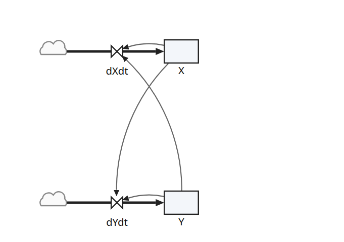

Lotka-Volterra predator-prey
The classic predator-prey model, written straight from its two differential equations: a stock for each population (X, the prey; Y, the predators) and one flow into each, holding its equation.
Run it for 50 time units and plot X and Y to see the two populations rise and fall in turn.
Open in SimileThe model spec: lotka-volterra.json.

Built step by step in the tutorial.